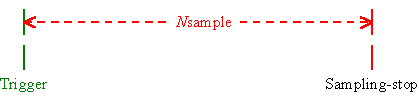
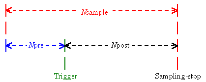
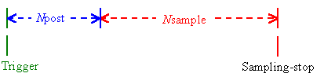
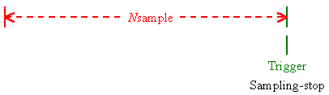
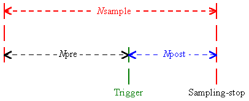
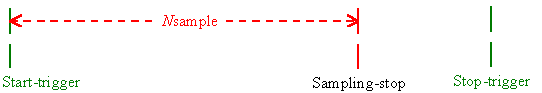
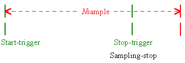

Number of Samples When the Trigger Delay Capability is Used
- For start-trigger without delay

Nsample: the number of samples The number of samples is specified as follows.
1 <= Nsample <= 524288
- For start-trigger with pre-trigger delay

Nsample: the number of samples
Npre: the number of pre-trigger samples
Npost: the number of post-trigger samples
Each number of samples is specified as follows.Nsample = Npre + Npost
2 <= Nsample <= 524288
1 <= Npost <= 262144
1 <= Npre <= (524288 - 1024 * n)A number of n is the minimum value to be satisfied with the condition of
Npost <= (1024 * n).
- For start-trigger with post-trigger delay

Nsample: the number of samples
Npost: the number of post-trigger samples
Each number of samples is specified as follows.1 <= Npost <= 524287
1 <= Nsample <= (524288 - Npost)
- For stop-trigger without delay

Nsample: the number of samples
The number of samples is specified as follows.1 <= Nsample <= 524288
- For stop-trigger with post-trigger delay

Nsample: the number of samples
Npre: the number of pre-trigger samples
Npost: the number of post-trigger samples
Each number of samples is specified as follows.Nsample = Npre + Npost
2 <= Nsample <= 524288
1 <= Npost <= 262144
1 <= Npre <= (524288 - 1024 * n)A number of n is the minimum value to be satisfied with the condition of Npost <= (1024 * n).
- For start/stop-trigger without delay
The sampling will be completed when the specified number of samples is retrieved before a stop-trigger is asserted.

The sampling will be completed when a stop-trigger is asserted even if the specified number of samples is not retrieved.

Nsample: the number of samples
The number of samples is specified as follows.1 <= Nsample <= 524288
Note: The delay cannot be specified in start/stop-trigger. The start/stop-trigger are applicable to the PCI-3161[12]C02 or later or PCI-3163[13]C04 or later. (Hardware Version and Change Number)
© 2000, 2013 Interface Corporation. All rights reserved.